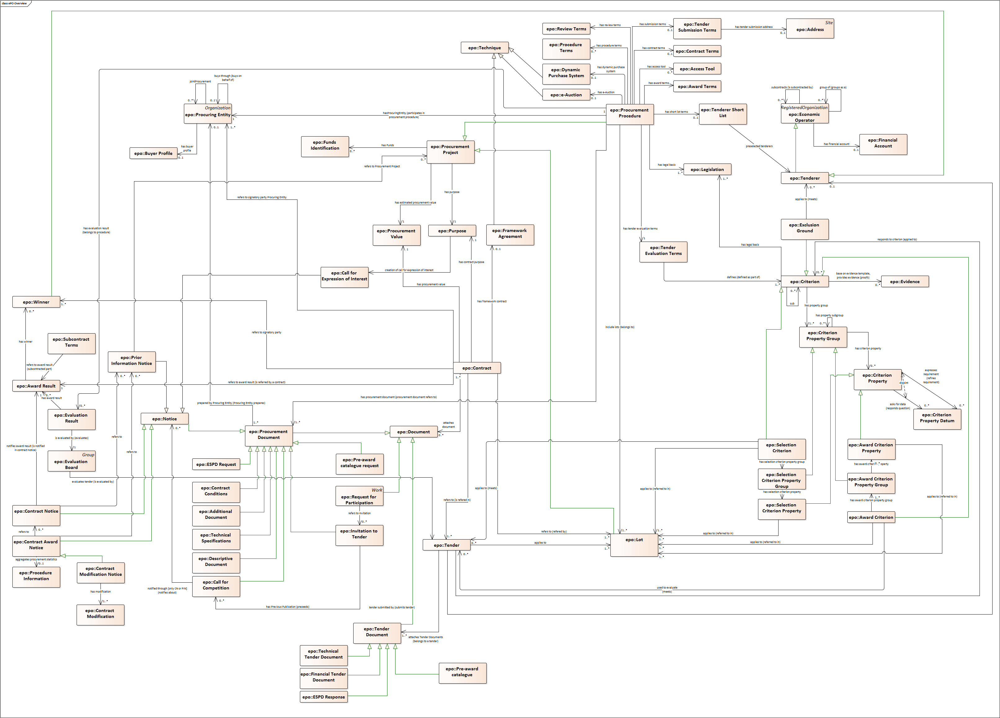

The Conceptual Data Model
The figure below provides an general view of the Classes and relations of the ePO v2.0.0 Ontology. Keep in mind that for this version the focus was put on e-Notification and e-Access.
Overview

Figure 1. ePO Conceptual Data Model, overview
This other view adds the attributes of each class, including cardinalitites and the abstract data types. At OWL design time these abstract data types are implemented through the reuse of standard types (see the ePO specification "OWL Design" chapter for details on this).